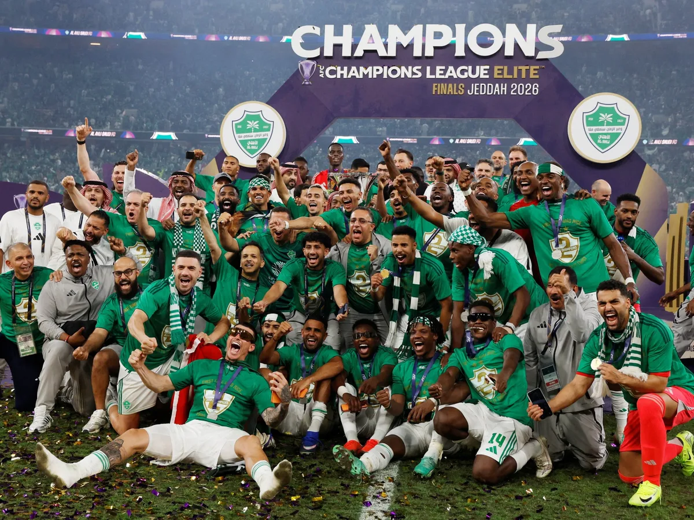

Ranglar
Identika: maydon yashili + lime aksent. Hex qiymatlar CSS oʻzgaruvchilardan jonli oʻqiladi. Kartochkani bossangiz — qiymat nusxalanadi.
Asosiy
Fon va chiziqlar
Matn
Holat ranglari
| Token | Qayerda ishlatiladi |
|---|---|
--navy | Topbar, qorongʻi boʻlimlar, footer, asosiy tugma (.btn--dark), faol chip |
--lime | Hero asosiy CTA, sarlavha marker chizigʻi, qorongʻi boʻlimdagi havolalar va belgilar, fokus nuqtalari. Oq fonda matn rangi sifatida ishlatilmaydi |
--blue / --blue-2 | Havolalar, faol menyu bandi, forma fokus chegarasi, ikonka konteynerlari (.ic-blue). Nom tarixiy — qiymati yashil |
--sky / --sky-2 | Yumshoq fon: hover, tanlangan variant, eslatma bloklari |
Telegram #229ED9 | Faqat Telegram tugmalari (.btn--tg) — Telegram brend rangi, identikaga kirmaydi |
Tipografika
Sarlavhalar — Manrope, matn — Inter, raqam va kodlar — JetBrains Mono. Hammasi loyiha ichida (lotin + kirill). Oʻlchamlar clamp() bilan ekran kengligiga moslashadi — oʻng ustunda shu ekrandagi haqiqiy qiymat.
Radius va oraliq
Konteyner kengligi --wrap, yon chekka 24px (telefonda 16–18px). Header balandligi --nav-h.
Soyalar
Barcha soyalar yashil-qora tusda (rgba(11,42,31,…)) — sof qora soya ishlatilmaydi.
Liquid glass
Faqat asosiy qismlarda: header kapsulasi, ochiluvchi menyular, rasm ustidagi kartochkalar, qorongʻi boʻlim kartochkalari, oynalar, cookie paneli, ovoz paneli. Kompyuterda yorugʻlik nuqtasi kursorga ergashadi (--mx/--my). backdrop-filter qoʻllanmaydigan brauzerda toʻq fonga qaytadi.
Header kapsulasi
Tugmalar
Balandlik: .btn--sm 40px · standart 50px · .btn--lg 58px. Radius — toʻliq (pill). Hover: 2px yuqoriga + soya. Faol emas: .is-disabled (45% shaffoflik).
Forma elementlari
Maydon balandligi 50px, radius 10px. Telefonda shrift 16px — iOS maydonga bosilganda sahifani kattalashtirmaydi. Fokus: yashil chegara + 4px halqa.
Tanlov variantlari va kalitlar
Teglar, chiplar, holatlar
Kartochkalar va ikonka konteynerlari
Radius 20px, chegara --line. Hover (.card--hover): 4px yuqoriga, --sh-3 soya, rasm 1.05 marta kattalashadi.
Ikonkalar
Loyiha uchun chizilgan SVG toʻplam: 24×24 maydon, chiziq qalinligi 1.7px, uchlari yumaloq, rang — currentColor. Ikonkani bossangiz — nomi nusxalanadi. Ijtimoiy tarmoqlar: Instagram, Telegram, Facebook, YouTube (LinkedIn yoʻq).
3D futbol toʻpi
Klassik 32 panelli toʻp (12 beshburchak + 20 oltiburchak) canvas'da har kadrda chiziladi: yorugʻlik, yaltirash, qirra soyasi, pastda maysa aksi. Tashqi kutubxona yoʻq. Retina ekranlar uchun piksel zichligi hisobga olinadi.
| Bosh sahifa | 64px (telefonda 52px). Oʻng tomondan tushadi, klublar qatori ustida toʻxtaydi. Bosib tepish, sudrab otish, kursor bilan urish. Tepilgan joyi skrollda saqlanadi |
| Header | 14px, skroll boʻyicha dumalaydi (lime progress chizigʻi bilan) |
| “Yuqoriga” tugmasi | 30px toʻp, 52px shisha doira; 900px skrolldan keyin chiqadi |
| Sarlavha markeri | Toʻp tushayotganda “huquqi” va “himoyada” ostidagi lime chiziq chapdan oʻngga chiziladi (0.8s, ikkinchisi 0.35s kechikib) |
| Harakatni kamaytirish | prefers-reduced-motion yoqilgan boʻlsa: aylanish va chizish animatsiyalari oʻchadi |
Rasm va video
Maketdagi fotolar — namoyish uchun (1200px, WebP). Realizatsiyada quyidagi talablar boʻyicha buyurtmachining asl materiallari bilan almashtiriladi.
| Joy | Nisbat | Asl manba (minimal) | Eksport |
|---|---|---|---|
| Hero fotosi | 4 : 3.6 | 2400 × 2160 px | WebP/AVIF, 1200 va 2400px (srcset), ≤ 250 KB |
| Kirish / Free Agent Camp foni | toʻliq ekran | 2800 px kenglik | WebP, 1400 va 2800px, ustida qorongʻi gradient |
| Maqola va yangilik muqovasi | 16 : 9 / 16 : 10 | 2400 × 1350 px | WebP, 800 / 1600px |
| Keys kartochkasi | 16 : 10 | 1600 × 1000 px | WebP, 800 / 1600px |
| Video muqovasi | 16 : 9 | 1920 × 1080 px | WebP, 960 / 1920px |
| Futbolchi portreti | 1 : 1 | 800 × 800 px, yuz tepada | WebP 400px, object-position: top |
| Klub gerbi | 1 : 1 | SVG yoki 512px PNG, shaffof fon | SVG / WebP 160px |
Video pleyer holatlari

Harakat (animatsiya)
Ekranlar (breakpoint)
| Kenglik | Oʻzgarish |
|---|---|
≤ 1080px | Desktop menyu → ☰ toʻliq ekranli panel; hero bitta ustun; murojaat qadamlari gorizontal suriladi |
≤ 820px | 3 va 2 ustunli qatorlar bitta ustunga; statistika 2 ustun |
≤ 760px | Header 58px; “Kirish” menyuga oʻtadi; forma shrifti 16px; oynalar pastdan ochiladi; bildirishnomalar header ostida |
≤ 620px | Yon chekka 18px; footer bitta ustun |
≤ 420px | Yon chekka 16px; logo ostidagi yozuv yashiriladi |
| Tekshirilgan | 320 · 360 · 375 · 390 · 412 · 430 · 568 · 667 · 768 · 844 · 1024 · 1440px; iOS Safari xavfsiz zonalari (env(safe-area-inset-*)) |